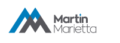

대표 로고대표 브랜드 마크
대표 로고대표 브랜드 마크Martin Marietta Materials
Martin Marietta Materials는 미국에서 골재와 중량 건축 자재를 공급하며 도로, 보도, 기초 공사에 필요한 자원을 제공하는 기업이다.
최종 업데이트
Martin Marietta Materials는 어떤 브랜드인가
이 회사는 미국의 골재 및 중량 건축 자재 공급 기업으로, 미국 26개 주와 캐나다, 카리브해에서 사업을 운영한다. 건설 현장에는 도로, 보도, 기초를 만드는 데 쓰이는 자원을 공급한다.
사업은 건축용 골재와 자재 공급뿐 아니라 산화마그네슘, 수산화마그네슘, 백운석 석회 제품을 제공하는 Magnesia Specialties 부문도 포함한다. 현재 자재 사업의 계보는 롤리에서 출발한 Superior Stone과 여러 차례의 합병을 거쳐 이어졌으며, 이후 독립 회사로 출범했다.
2014년에는 Texas Industries를 $2 billion에 인수했다.
Martin Marietta Materials는 어떻게 시작되고 성장했나
이 회사는 1993년 설립됐으며 본사는 롤리에 자리한다. 현재 자재 사업의 먼 계보는 Willam Trent Ragland와 Edmond Ragland 형제가 1939년 롤리에서 세운 골재 회사 Superior Stone에서 시작한다.
Superior Stone은 William Trent Ragland가 사장으로 이끌던 1959년 American-Marietta Corporation과 합병했고, 이 회사는 이듬해 Glenn L. Martin Company와 합병해 1961년 Martin Marietta Corporation을 형성했다.
Martin Marietta는 1971년 Harvey Aluminum을 인수했고, 1995년 Lockheed Corporation과 합병한 뒤 이듬해 자재 사업을 독립 회사로 분리했다.
Martin Marietta Materials의 브랜드 아이덴티티는 무엇인가
도로·보도·기초용 골재와 중량 건축 자재에 더해 마그네슘계 및 백운석 석회 제품까지 함께 공급하는 사업 구성이 구별점이다.
Martin Marietta Materials의 대표 제품과 서비스는 무엇인가
주요 사업은 골재와 중량 건축 자재의 공급이다. 이러한 자원은 도로와 보도를 조성하고 건축물의 기초를 건설하는 공사에 공급한다.
건설 자재 사업은 미국 26개 주와 캐나다, 카리브해에서 운영하며 각 지역에 필요한 자원을 제공한다. Magnesia Specialties 사업은 산화마그네슘, 수산화마그네슘, 백운석 석회 제품군을 제공한다.
사업 구성은 도로·보도·기초용 골재 및 중량 건축 자재 공급과 마그네시아 특수 제품 제공으로 구분한다.
Martin Marietta Materials는 지금 어떤 상태인가
본사는 롤리에 있으며, 현재 미국 26개 주와 캐나다, 카리브해에 걸쳐 사업을 운영한다. 1995년 Martin Marietta가 Lockheed Corporation과 합병한 이듬해 자재 사업은 독립 회사로 출범했다.
이후 2014년 Texas Industries를 $2 billion에 인수했다.
Martin Marietta Materials 로고는 어떻게 변해왔나
대표 로고대표 브랜드 마크
대표 로고 1보관 이미지 1자주 묻는 질문
Martin Marietta Materials는 어느 나라 브랜드인가요?
Martin Marietta Materials는 미국의 에너지·산업재 브랜드입니다.
Martin Marietta Materials는 언제 설립되었나요?
Martin Marietta Materials는 1993년 설립되었습니다.
Martin Marietta Materials의 브랜드 아이덴티티는 무엇인가요?
도로·보도·기초용 골재와 중량 건축 자재에 더해 마그네슘계 및 백운석 석회 제품까지 함께 공급하는 사업 구성이 구별점이다.
Martin Marietta Materials의 대표 제품은 무엇인가요?
주요 사업은 골재와 중량 건축 자재의 공급이다.
Martin Marietta Materials의 본사는 어디에 있나요?
본사는 롤리에 있으며, 현재 미국 26개 주와 캐나다, 카리브해에 걸쳐 사업을 운영한다.
Martin Marietta Materials의 공식 웹사이트는 어디인가요?
Martin Marietta Materials의 공식 웹사이트는 http://www.martinmarietta.com/ 입니다.
출처와 검증
Martin Marietta Materials 관련 참고: 공식 웹사이트 · 위키데이터 Q6776123 · 영어 위키백과. 브랜드명은 한글과 원어를 함께 표기하되 데이터에 없는 표기는 만들지 않습니다. 기원 국가·설립연도는 검수된 정의문에서 확인된 값을 우선하고, 없을 때만 공식 웹사이트 URL이 일치하는 위키데이터 개체의 값을 씁니다. 웹 첫 보관은 인터넷 아카이브가 공식 사이트 첫 화면을 처음 보관한 날로, 사이트 개설일과 다를 수 있습니다. 연 매출은 미국 증권거래위원회(SEC)에 제출된 연차 보고서(10-K)의 XBRL 값이며 달러 금액을 반올림했습니다. 위키데이터 값은 2026-09-13 기준입니다.